라비 작은 얼굴 · 메뉴바 아이콘
큰 얼굴(33px 이상)은 그대로 — 변경 전·후 DOM 일치 264/264, 화면 픽셀 일치 예. 16~32px 만 손맞춤 그림으로 바뀜. 모든 그림은 실제 Chrome 렌더.
한눈에 — 라이트 · 2배 실제 렌더(전 → 후)
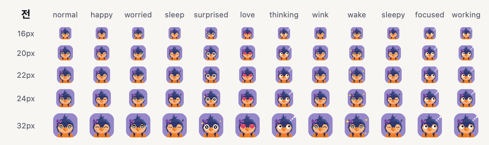
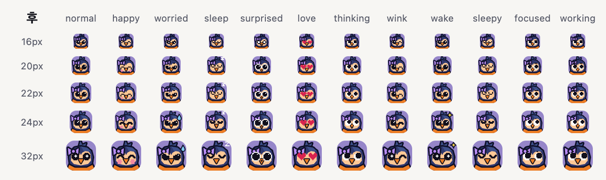
다크
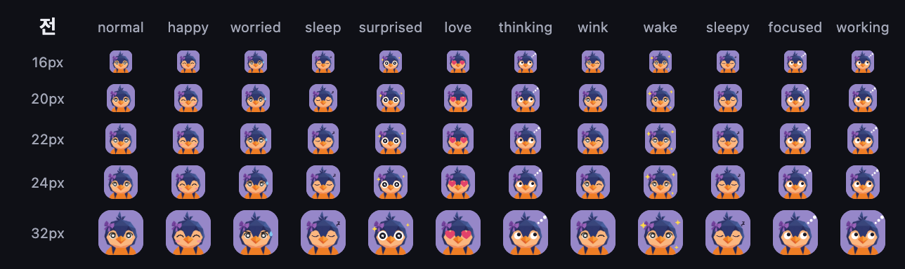
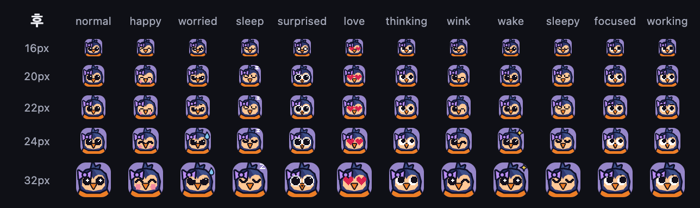
크기별 1·2·4배 확대 (라이트)
16px 평상·기쁨·걱정·졸림·놀람·사랑
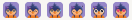
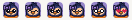
20px 평상·기쁨·걱정·졸림·놀람·사랑
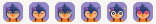
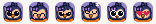
22px 평상·기쁨·걱정·졸림·놀람·사랑
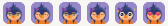
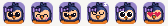
24px 평상·기쁨·걱정·졸림·놀람·사랑
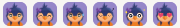
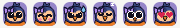
32px 평상·기쁨·걱정·졸림·놀람·사랑
크기별 1·2·4배 확대 (다크)
16px 평상·기쁨·걱정·졸림·놀람·사랑
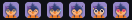
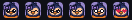
20px 평상·기쁨·걱정·졸림·놀람·사랑
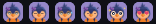
22px 평상·기쁨·걱정·졸림·놀람·사랑
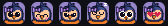
24px 평상·기쁨·걱정·졸림·놀람·사랑
32px 평상·기쁨·걱정·졸림·놀람·사랑
돈·보안 경고 감정은 진지하게 (감정 엔진 경로, 20·24·32px)
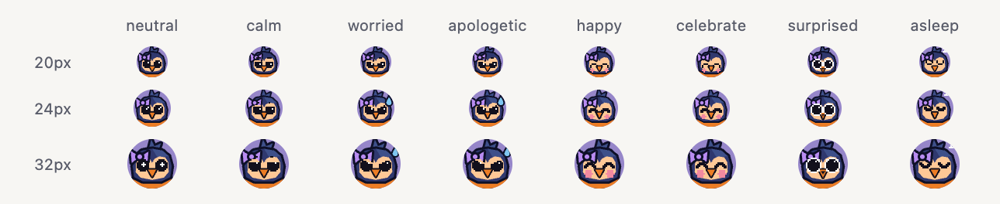
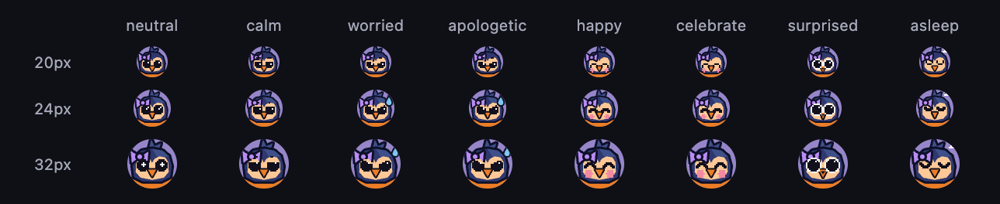
메뉴바 모의 (왼쪽 셋 = 지금: 템플릿·색·색+알림 / 오른쪽 셋 = 새 템플릿: 평상·알림·졸림)
트레이 파일
템플릿 2톤(알파 0/255만): 후 예 · 알림 점 틈 18px=1px, 36px=2px
수치
눈 지름 (px)
| 크기 | 전(어두운 눈동자) | 후 | 목표 | |
|---|---|---|---|---|
| 16px | 1.8 (흰 테 포함 2.3) | 4 | ≥4 | 통과 |
| 20px | 2.2 (흰 테 포함 2.9) | 5 | ≥5 | 통과 |
| 22px | 2.5 (흰 테 포함 3.2) | 5 | ≥5 | 통과 |
| 24px | 2.7 (흰 테 포함 3.5) | 6 | ≥6 | 통과 |
| 32px | 3.6 (흰 테 포함 4.6) | 8 | ≥7 | 통과 |
표정 구별 — 칸끼리 평균 픽셀 차이 % (라이트, 클수록 구별 쉬움)
| 크기 | 전 최소 짝 | 후 최소 짝 | 전 평상~걱정 | 후 평상~걱정 | 전 평균 | 후 평균 |
|---|---|---|---|---|---|---|
| 16px | 0.41 normal~worried | 1.99 normal~worried | 0.41 | 1.99 | 1.57 | 3.84 |
| 20px | 0.44 normal~worried | 2.84 normal~worried | 0.44 | 2.84 | 1.72 | 5.83 |
| 22px | 0.45 normal~worried | 2.45 normal~worried | 0.45 | 2.45 | 1.62 | 4.7 |
| 24px | 0.4 normal~worried | 3.13 normal~surprised | 0.4 | 3.73 | 1.61 | 5.23 |
| 32px | 0.42 normal~worried | 3.21 normal~worried | 0.42 | 3.21 | 1.69 | 4.93 |
표정 구별 (다크)
| 크기 | 전 최소 짝 | 후 최소 짝 | 전 평상~걱정 | 후 평상~걱정 | 전 평균 | 후 평균 |
|---|---|---|---|---|---|---|
| 16px | 0.41 normal~worried | 1.99 normal~worried | 0.41 | 1.99 | 1.58 | 3.84 |
| 20px | 0.43 normal~worried | 2.84 normal~worried | 0.43 | 2.84 | 1.72 | 5.84 |
| 22px | 0.45 normal~worried | 2.45 normal~worried | 0.45 | 2.45 | 1.61 | 4.71 |
| 24px | 0.4 normal~worried | 3.13 normal~surprised | 0.4 | 3.73 | 1.63 | 5.23 |
| 32px | 0.42 normal~worried | 3.21 normal~worried | 0.42 | 3.21 | 1.69 | 4.94 |
대비 (WCAG) — 설계 색
| 짝 | 전 | 후 | 목표 | |
|---|---|---|---|---|
| eye_vs_face | 9.35 | 12.5 | ≥7 | |
| hair_edge_vs_bg | 3.43 | 5.83 | ≥3 | 후: 머리 둘레 진남색 외곽선이 배경과 만난다 |
| beak_edge_vs_face | 1.61 | 12.5 | ≥3 | 후: 부리 둘레 검정 테 — 테 바깥은 살구, 안은 주황 |
| beak_fill_vs_outline | None | 6.74 | ≥3 | |
| ribbon_vs_hair | 1.5 | 4.24 | ≥3 | |
| ribbon_edge_vs_bg | 2.29 | 5.83 | ≥3 | 후: 리본 테 |
| face_vs_hair | 6.33 | 7.3 | ≥3 | |
| brow_vs_face | 1.57 | 12.5 | ≥3 | 전: 걱정 눈썹이 남색 머리 위(#1B1A25 vs #2F386E) / 후: 살구 위에만 찍음 |
대비 — 실제 1x 렌더에서 잰 눈(가장 어두운 칸) vs 얼굴
| 크기 | 전 | 후 |
|---|---|---|
| 16px | 2.8 #736A5E / #EEAF7B | 12.5 #12101C / #FFC896 |
| 20px | 4.43 #54534D / #FAB67E | 12.5 #12101C / #FFC896 |
| 22px | 4.59 #514A3F / #EDAF7B | 12.5 #12101C / #FFC896 |
| 24px | 5.2 #534636 / #F9B57D | 12.5 #12101C / #FFC896 |
| 32px | 6.59 #3C3933 / #F9B67E | 12.5 #12101C / #FFC896 |